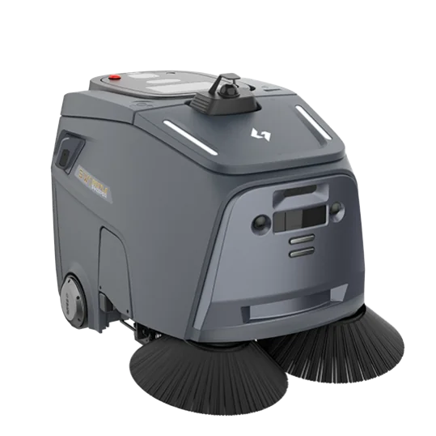
Industry Solutions
按行業探索方案
從行業場景出發，配置合適的機械人組合，讓自動化方案切實執行，帶來可衡量的營運效益。
學校及教育
校園每日面對清潔、教材運送、訪客接待及課外互動等重複工作，人手及時段有限。機械人可承接固定路線及重複性工序，讓教職員將時間留給教學與學生。
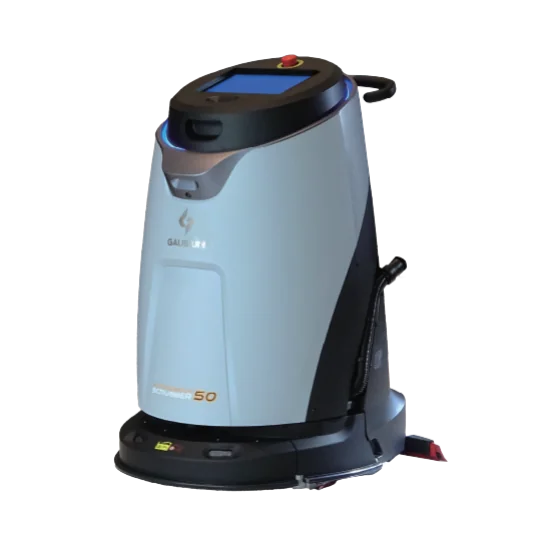
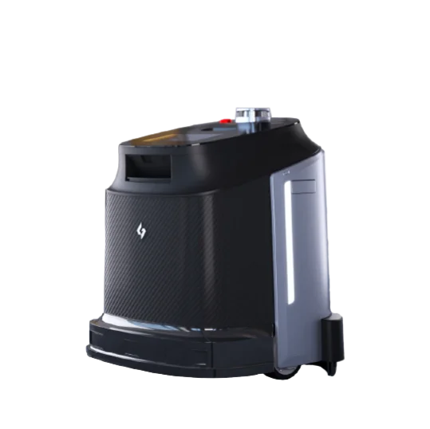
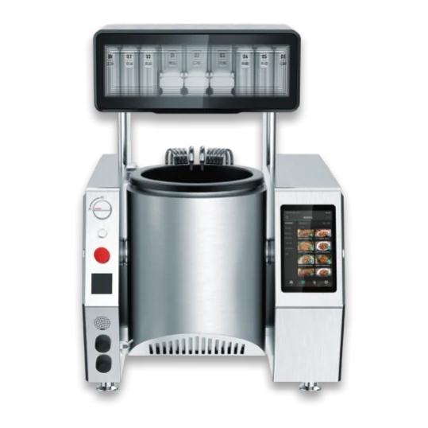
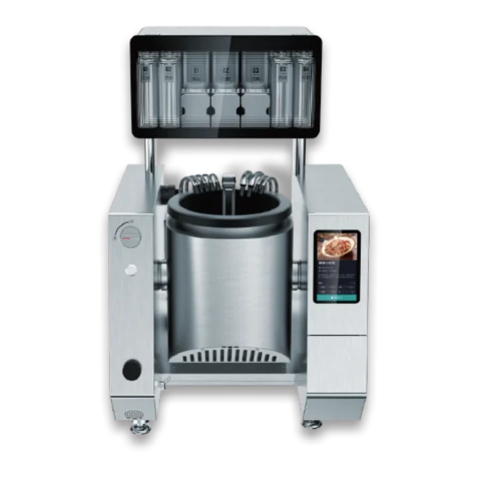
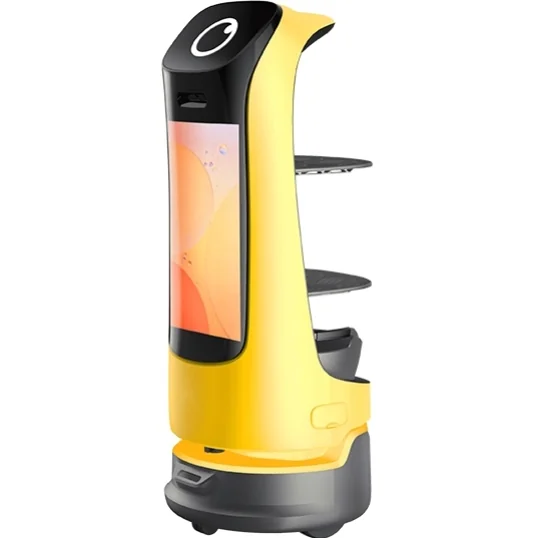
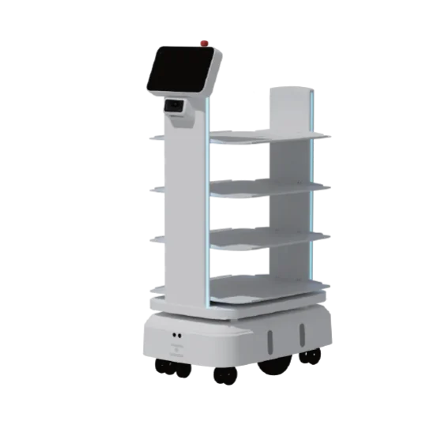
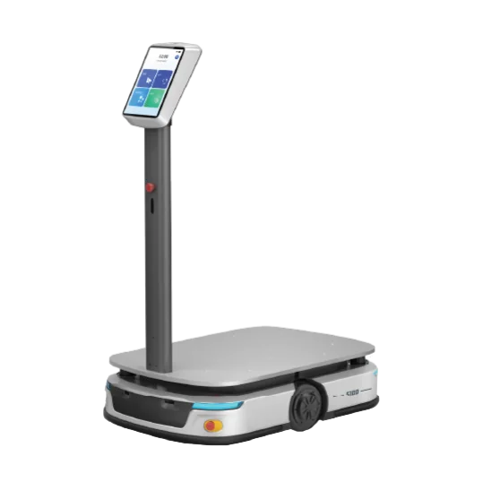
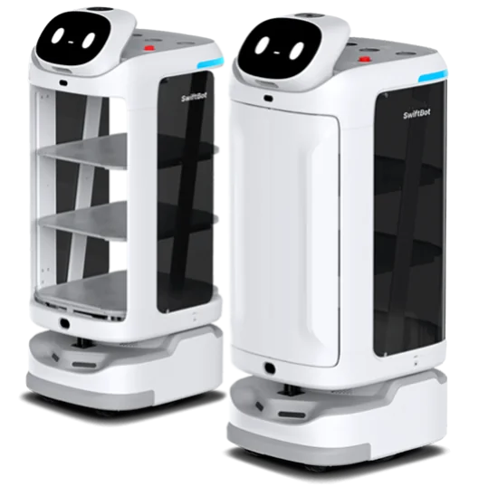
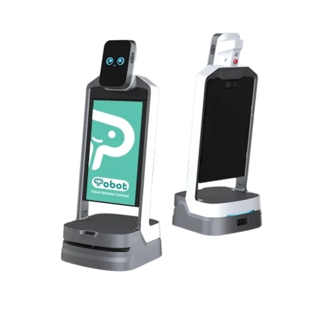
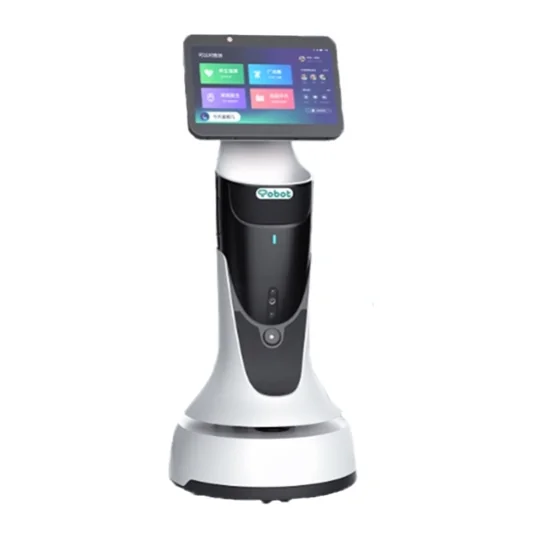
物業管理
商場、寫字樓、酒店及屋苑等物業每日需要巡邏、清潔、跨樓層配送及訪客接待，範圍大、人流複雜。機械人可 24 小時穩定執行既定路線，降低人手調度壓力。
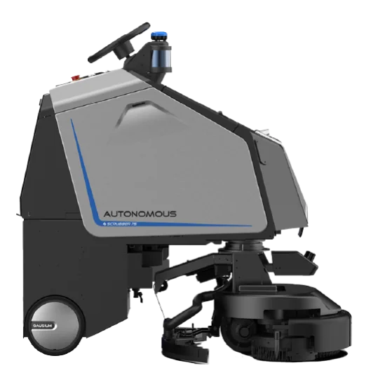
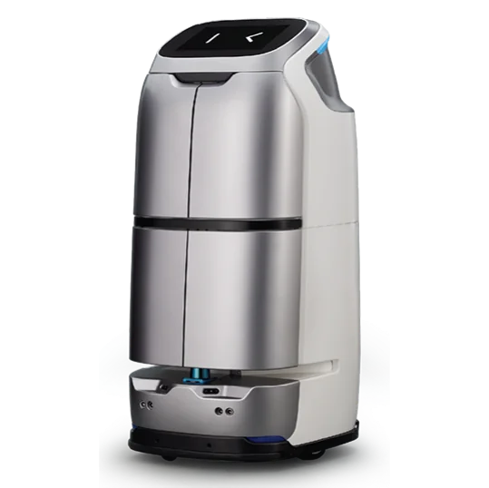
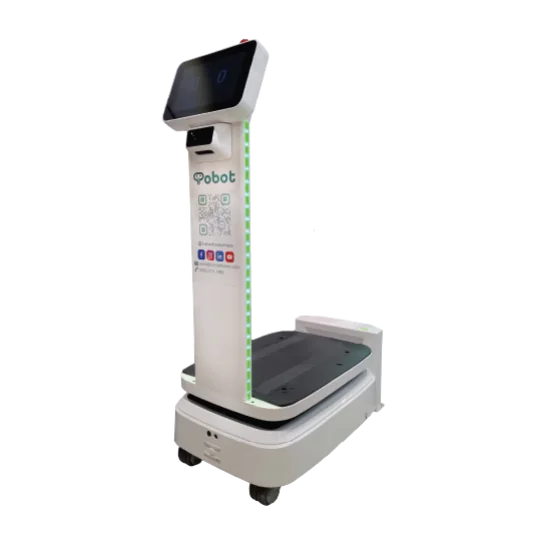
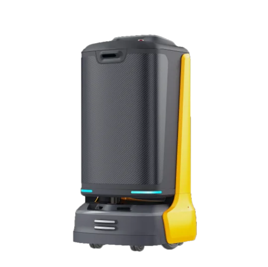
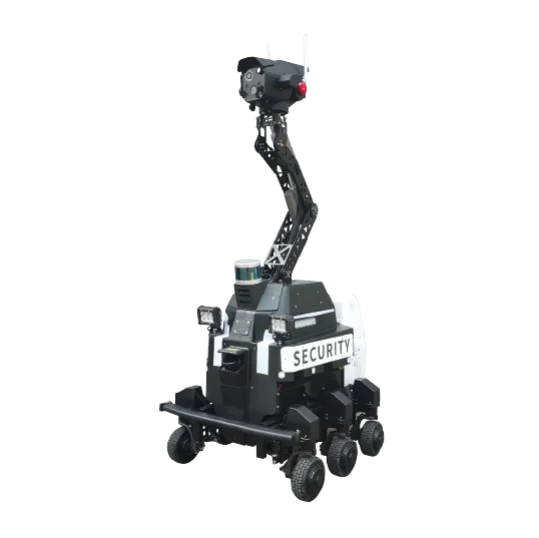
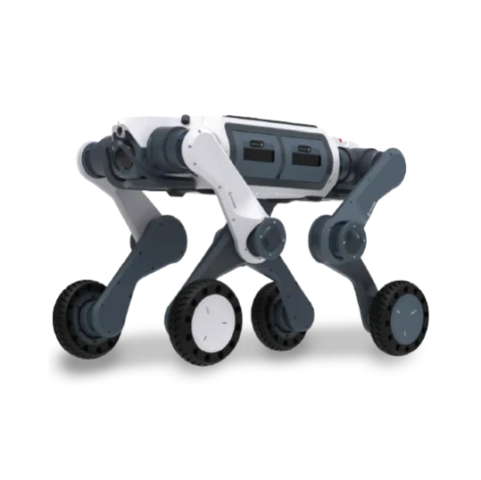
醫療及院舍
醫院及院舍對物資運送、餐飲配送及環境衛生要求嚴格，同時人手長期緊絀。機械人可分擔重型搬運及重複配送工作，讓護理人員專注於病人及院友的直接照顧。
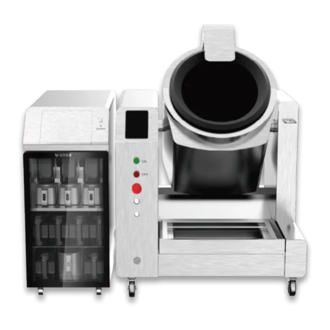
保安及巡邏
大型園區、工業廠房及基礎設施需要全天候巡邏監控，單靠人手難以覆蓋所有範圍及時段。機械人可自主巡航、即時偵測異常，並將保安人手釋放到更需要判斷力的崗位。
Not Sure Where to Start?
不確定合適方案？讓顧問團隊為您評估
告訴我們您所在的行業、場地環境及希望改善的工作流程，團隊會建議合適的機型組合、部署方式及示範安排。
為教育、商業、醫療及基礎設施提供清潔、配送、接待、教學及巡邏等全場景機械人整合方案。